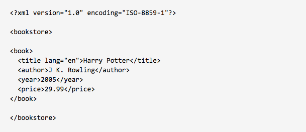
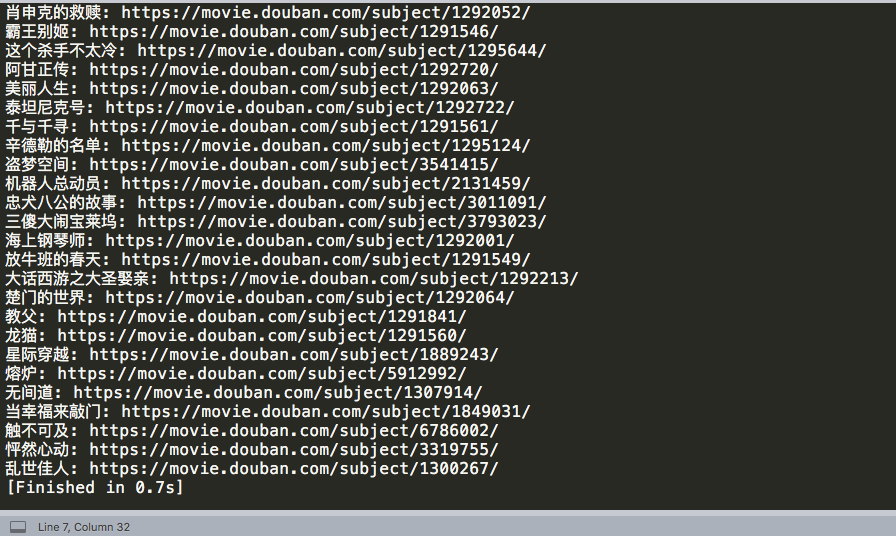

解析html文本的三种常用方法：正则表达式，BeautifulSoup，XPath。本文介绍第三种方法，即使用lxml库配合XPath语法解析html文档。
XPath的定义(From Wiki)：“XPath (XML Path Language) is a query language for selecting nodes from an XML document.”
什么是XML？XML是可扩展标记语言，是一种用于标记电子文件使其具有结构性的标记语言，例如：

很像html语言，但还是略有区别。
XPath语言虽然是为在xml文档中进行搜索而设计的，但也能工作于html文档，因此常用在数据采集工作中，进行文本解析与信息提取。
一言蔽之，XPath的功能是“定位”。
例如，下图中，想要得到红框圈出的图片的位置，即相应<img>元素在该html文档中的位置，可以进行以下操作 (以Chrome浏览器为例)：
第一，右击该图片的位置，选择“检查”，出现下图，红框位置 (蓝色选中区域) 即为该图片的<img>标签：

第二，右击默认的蓝色选中区域，点击Copy→Copy XPath，这样便复制了该<img>标签的“位置”，也就是“基于XPath语法表示的位置”：

第三，粘贴出来即可，如下：
//*[@id="content"]/div/div[1]/ol/li[1]/div/div[1]/a/img
上面的类似于电脑文件路径表达式的式子，就是用XPath语言书写的定位表达式，用于在html文档中 (当然初衷是解析xml文档) 实现元素的搜索、查询和定位。
下图的xml代码取自Wiki的XPath条目：
12345678910111213141516171819202122
<Wikimedia>
<projects>
<project name="Wikipedia" launch="2001-01-05">
<editions>
<edition language="English">en.wikipedia.org</edition>
<edition language="German">de.wikipedia.org</edition>
<edition language="French">fr.wikipedia.org</edition>
<edition language="Polish">pl.wikipedia.org</edition>
<edition language="Spanish">es.wikipedia.org</edition>
</editions>
</project>
<project name="Wiktionary" launch="2002-12-12">
<editions>
<edition language="English">en.wiktionary.org</edition>
<edition language="French">fr.wiktionary.org</edition>
<edition language="Vietnamese">vi.wiktionary.org</edition>
<edition language="Turkish">tr.wiktionary.org</edition>
<edition language="Spanish">es.wiktionary.org</edition>
</editions>
</project>
</projects>
</Wikimedia>
试着通过缩进，将xml文档 (或者html文档) 想象成树状结构：缩进越少越靠根部，越靠顶端；缩进越多越靠枝叶，越靠末端；相同缩进，属于同一层级。
上文代码中，一个个标签 (元素) 就是一个个节点。

上图中，仅仅关注这一部分的html代码：id属性为content的div元素位于根部，即最顶端；下一层有两个元素，一个是h1元素，另一个是class属性为grid-16-8 clearfix的div元素；再下一层是class属性为article的div元素……这些元素就是一个个节点，这些节点构成一个错落有致的树状结构。
表达式以/开头，表示从根节点开始；此后的/，表示“逐层递进”，如：/Wikimedia/projects/project，表示选取从根节点，即Wikimedia元素开始，之后进入下一层的所有projects元素，再进入下一层的所有project元素。因此，可以选到两个结果，第一个是<project name="Wikipedia" launch="2001-01-05">...</project>，另一个是<project name="Wiktionary" launch="2002-12-12">...</project>
表达式/Wikimedia/project将会返回无，因为Wikimedia元素的下一层，并没有任何project元素。这也是为什么/叫做“逐层递进”。
相比而言，表达式以//开头，表示从“任意位置”开始；此后出现//，表示“跨层递进”，如：//project，表示选取文档中的所有project元素 (不论其位置在哪里)；/Wikimedia//project将会返回两个project元素，因为//表示可以跨层，因此该表达式表示Wikimedia元素下的、不论哪一层的所有project元素，注意和/Wikimedia/project进行区分。
@表示获取元素相应属性的属性值。例如，我想获取所有project元素的name属性，可以这样写：/Wikimedia/projects/project/@name，当然也可以这样写//project/@name。上述两种写法也表明，善用//可以使表达式简化许多。
选取元素中所夹的文本，使用text()。例如，获取所有项目所有版本的主页，可以这样写：//edition/text()"，将返回'en.wikipedia.org', 'de.wikipedia.org', 'fr.wikipedia.org'等共10个结果。
以./开头或者直接以无/开头的路径表达式，是相对路径的表示方式。表示从当前节点开始。
选取满足某个特定条件的元素，或包含某个特定属性值的元素，使用包在方括号中的谓语。
//project[1]/@name：选取第一个project元素的name属性的属性值，即'Wikipedia'(注意：XPath路径表达式中的下标索引是从1开始的)；
//project[last()]/@name：选取最后一个project元素的name属性的属性值，即'Wiktionary'；
//project[@launch]：选取含有launch属性的project元素，有两个；
//project[@name='Wiktionary']：选取含有name属性且name属性值为'Wiktionary'的project元素，只有一个；
子：下一层节点；
父：上一层节点；
兄弟：同一层节点；
先辈：上一层，上上层，上上上层节点……
后代：下一层，下下层，下下下层节点……
/Wikimedia/*表示选取根节点Wikimedia的所有子元素，只有一个，即projects元素。
//project[@*]表示选取所有带有属性的 (不管什么属性都可以，只要有属性) 的projects元素，有两个。
提取到一个元素节点，想在此节点位置的基础上，提取它的子节点元素或父节点元素或兄弟节点元素的信息，就要用到轴。
常用的轴：
child：所有子节点；parent：所有父节点；preceding-sibling：之前的所有同级节点（兄弟节点）；following-sibling：之后的所有同级节点（兄弟节点）；例如，我想查找'Wikipedia'项目language="German"版本之后的剩余版本的网址，可以这么写：//project[@name='Wikipedia']/editions/edition[@language='German']/following-sibling::*/text()，将会得到['fr.wikipedia.org', 'pl.wikipedia.org', 'es.wikipedia.org']。
即，完整的一步(one step)，可以写作：轴名称::节点测试[谓语]，即axis::node-test[predicate]。
暂略。在谓语中可以使用算术运算符、比较运算符等。
1234567
# 从lxml库中导入etree模块
from lxml import etree
# 返回根节点对象
# 对于html文档，则使用root = etree.HTML(html_str)
root = etree.XML(xml_str)
# 开始查询
result = root.xpath("你的xpath路径表达式")
从豆瓣电影 Top 250上采集第一页25部电影的第一名称 + 详细页面链接：
12345678910111213
import requests
from lxml import etree
url = "https://movie.douban.com/top250"
res = requests.get(url)
html_str = res.text
root = etree.HTML(html_str)
items = root.xpath("//div[@class='hd']")
for item in items:
i_name = item.xpath("./a/span[1]/text()")[0]
i_url = item.xpath("./a/@href")[0]
print(i_name, ': ', i_url, sep='')
注意：
./的用法；结果如下：

By DraymondG